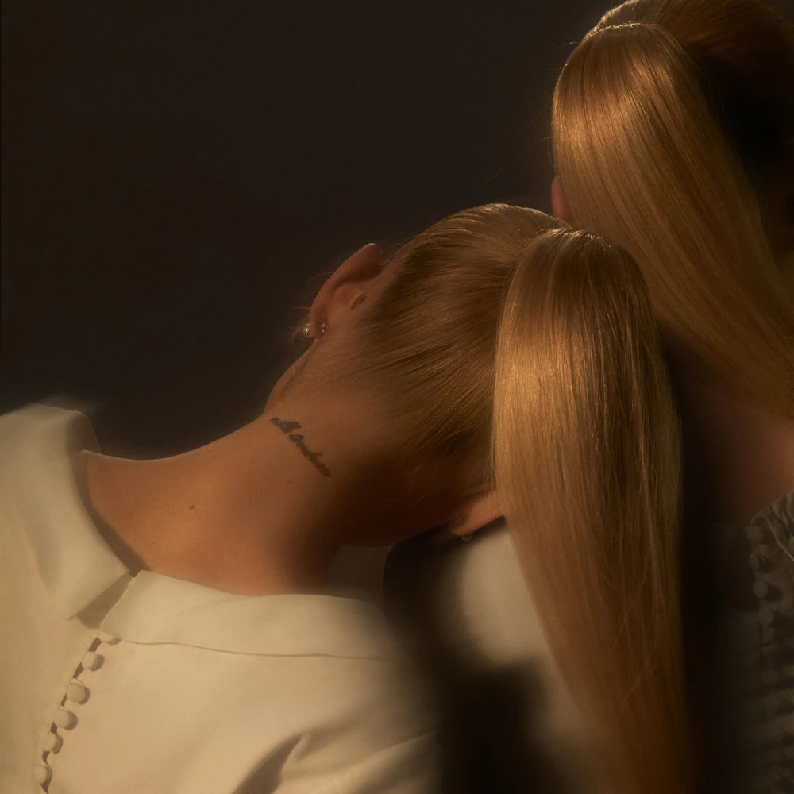
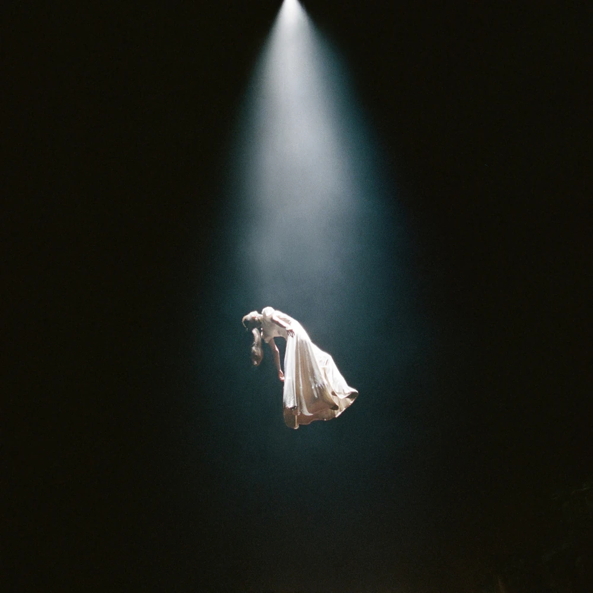
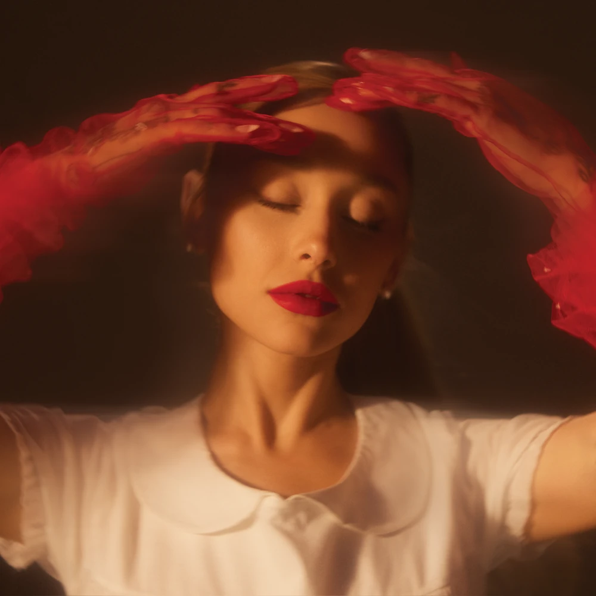
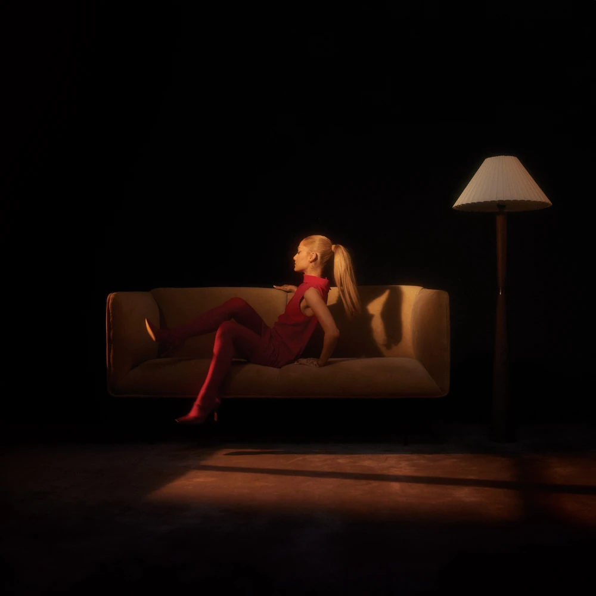
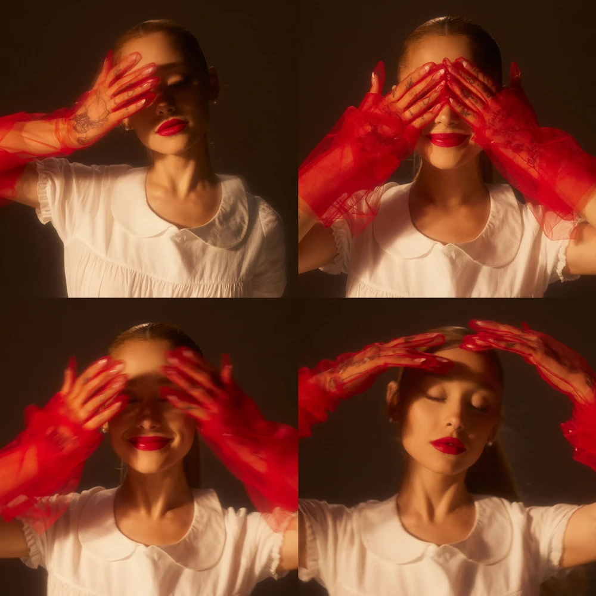
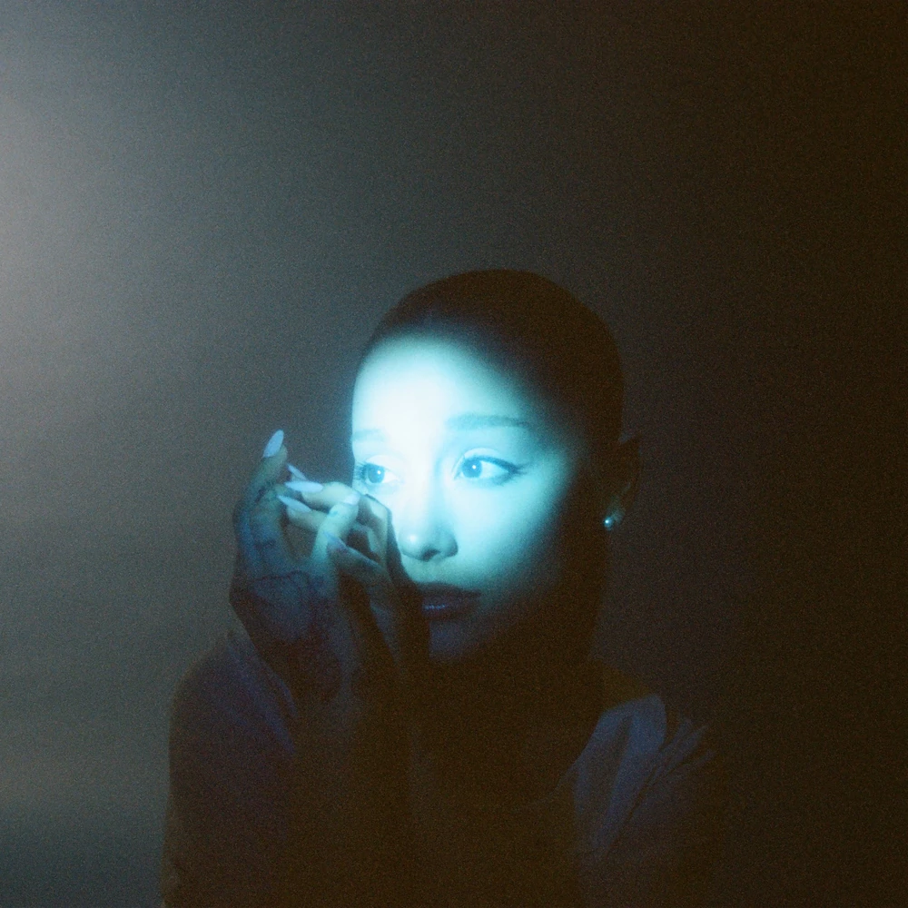
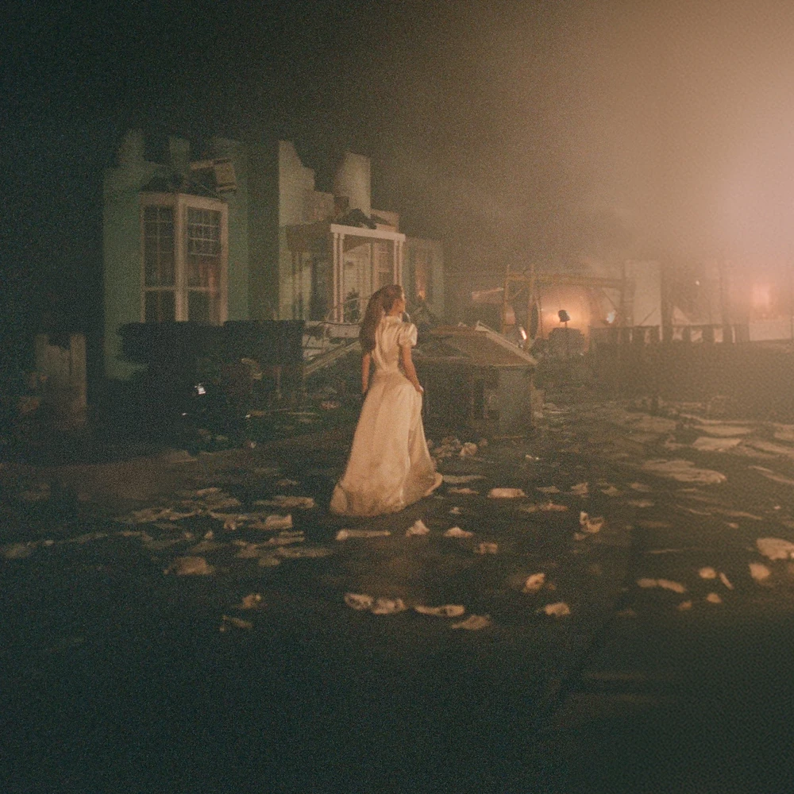
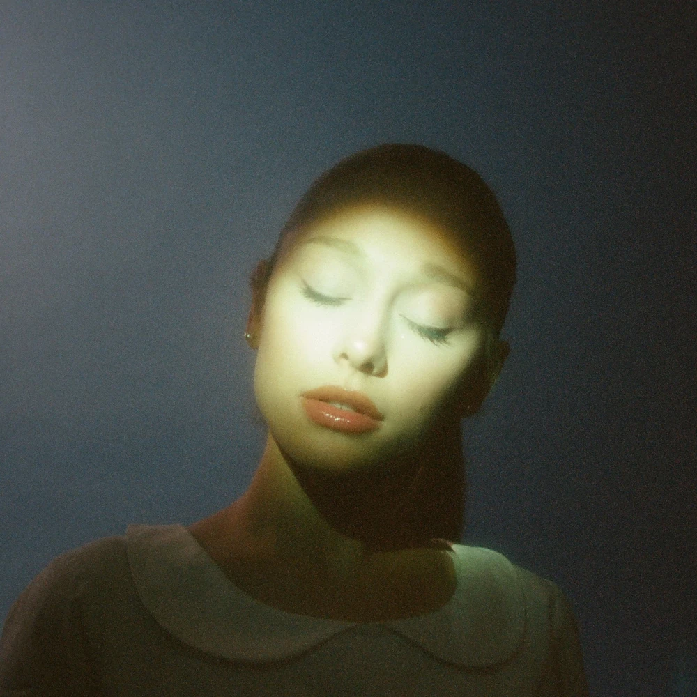
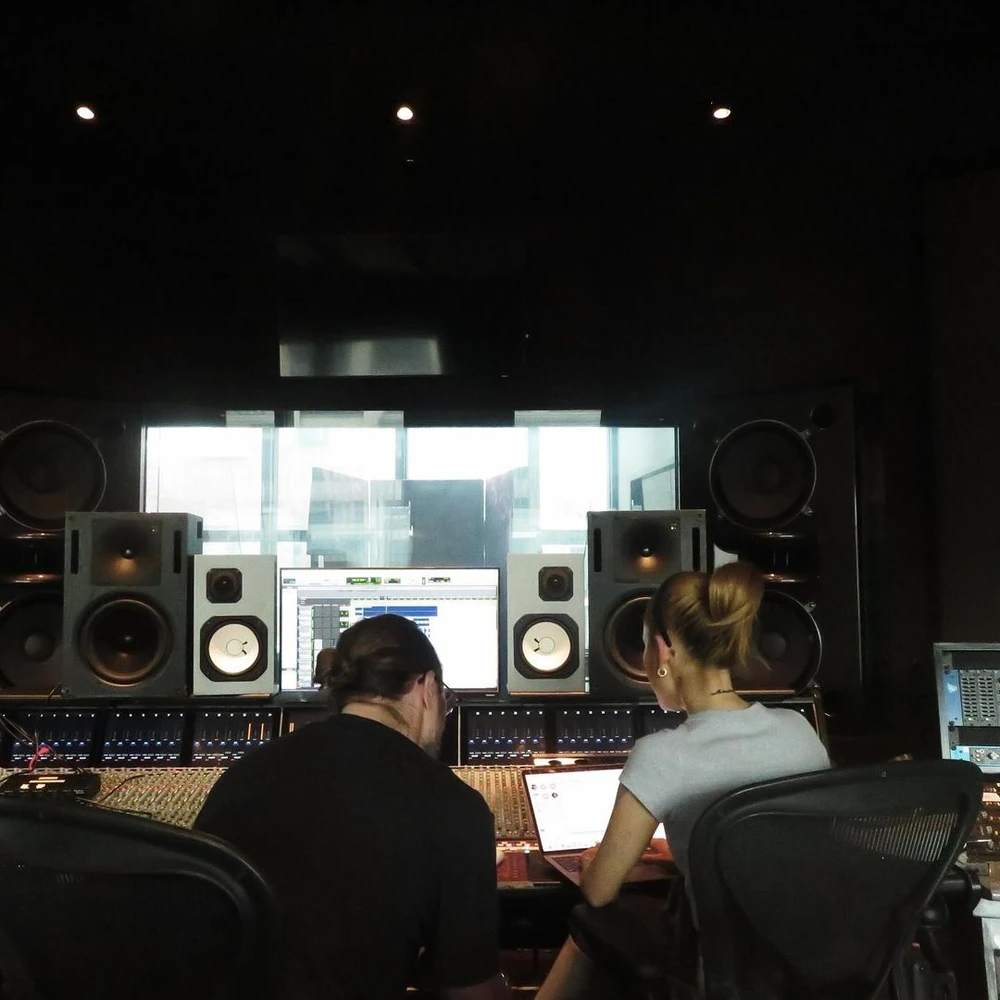
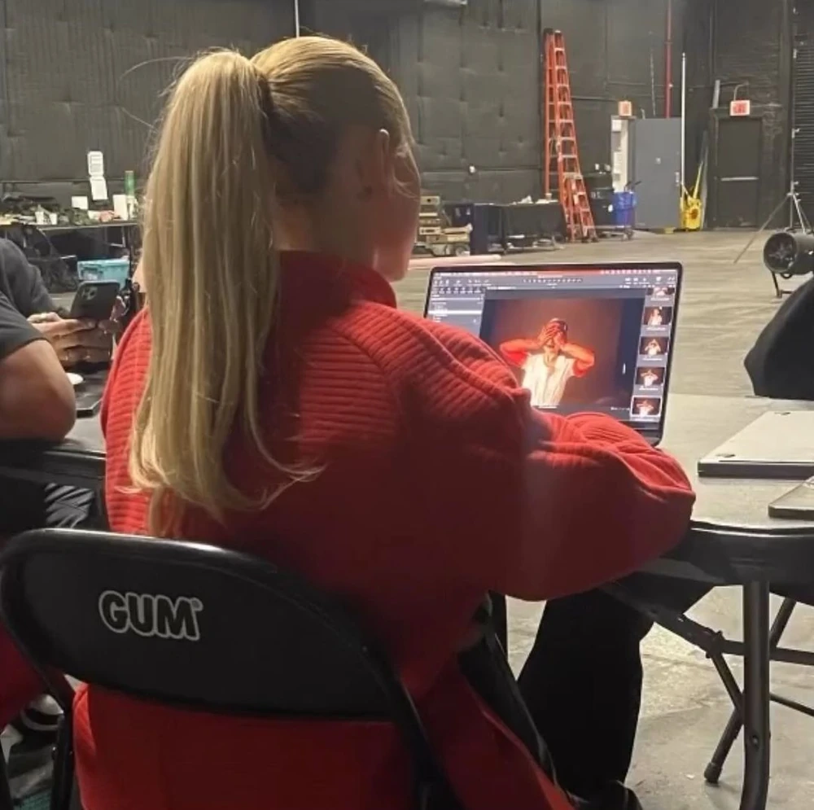

About ⋆ . ˚








Eternal Sunshine (stylized in all lowercase, commonly abbreviated as ES) is the seventh studio album by American singer Ariana Grande. It was released on March 8, 2024, through Republic Records. The album's title is based on Eternal Sunshine of the Spotless Mind (2004), a film in which two individuals undergo a procedure to erase each other from their memories following the dissolution of their relationship. It also serves as Ariana's first concept album.
"Yes, And?" was released as the album's lead single on January 12, 2024. The song debuted at No. 1 on the Billboard Hot 100, Global 200, and Global Excl. US charts. "We Can't Be Friends (Wait For Your Love)" was released alongside the album on March 8, 2024, as its second single. The song debuted at No. 1 on the Billboard Hot 100 and became Grande's ninth number 1 single. With it, Grande broke Taylor Swift's record for the greatest number of number 1 debuts among women.
The "slightly deluxe" edition of the album was released exclusively on Grande's website on March 9, 2024, and then on streaming two days later. It features a Troye Sivan remix of "Supernatural", an acoustic version of "Imperfect For You", an acapella version of "True Story", and the Mariah Carey remix of "Yes, And?". On October 1, 2024, the "slightly deluxe and also live" edition of the album was released for its seven-month anniversary, including live versions of seven songs from the album. On March 28, 2025, the "brighter days ahead" deluxe version of the album was released, featuring six new songs.
Background ⋆ . ˚
In 2022, Grande revealed that an album hadn't been started due to the production of Wicked. Victoria Monét, Grande's longtime collaborator and songwriter, said in an interview that they will "hit the studio together to write and make music again as soon as she comes back to the United States." She ultimately wasn't involved with the creation of Eternal Sunshine, despite contributing to all of Ariana's other studio albums.
On September 14, 2023, HITS Daily Double magazine hinted at new music. Page Six later came out saying something similar.

In October 2023, Ariana interacted with producers such as Babyface, Zedd, and Max Martin. She also updated her Spotify and Apple Music accounts, the last time being before Positions was released. MTVUK also released a video where they teased that Ariana, who later liked the posed, may release new music soon. On October 2, 2023, Ariana posted a picture with Max Martin on her Instagram account, showing them both on the balcony of the Jungle City Studios in New York City. On October 15, 2023, a fan met Grande and said, "can't wait for your new album", later she responded saying, "let me make it first".
On October 16, 2023, Page Six confirmed that Ariana Grande began working on her seventh studio album with her longtime producer, Max Martin. While the filming for Wicked was paused, Grande and Martin ended up making lots of new music together in New York while Wicked remained her top priority. Additionally Ariana's father Edward Butera liked a post by @honeymoonavenue on Instagram, in which it was said that Ariana is back in the studio. On October 23, 2023, Grande posted on her Instagram visting a goat farm with Joan Grande, Max Martin, and Norbert Leo Butz with the caption: "ag7: goat mother".
On November 3, 2023, two girls spotted Ariana in an elevator and asked for a photo. They stated that they "guess she is preparing an album because there is a recording studio upstairs." Ariana was also holding a computer during the interaction. The same day, Ariana was seen having a dinner with two Republic Records executives, and she also had followed a Republic A&R on Instagram that she had worked with on Dangerous Woman. On November 14, 2023, Ariana had also followed Lou Carrao, a Jungle City Studios worker and sound engineer, on Instagram. On November 21, 2023, a journalist who caught up with Ariana during her visit to Broadway confirmed that she has been working with Max Martin since Wicked. The reporter states that "they're working together now on new music since 'Wicked' - in its two parts - is almost wrapped up.". On November 26, 2023, Ariana posted to her Instagram story's of her 'Glinda the Good Witch' mug with what looks like a music keyboard behind it confirming new music is on the way.

On December 7, 2023, Ariana teased the album by posting studio pictures and videos on her Instagram account. In the post, she was once again seen working with Max Martin. Aside from being posted on the 7th of December at exactly 7 AM PST, it also had 5 photos and 2 videos (7 in total), indicating its relation with her 7th studio album.
On December 14, 2023, Grande posted pictures on her Instagram account in which you could see her standing in a dance studio. She posted a picture of Will Loftis as well, who is a dance teacher. Alyx Liu showed extensions in a story on Instagram, which seem to have the same color as Grande's hair. On December 17, 2023, exactly 10 days after previously teasing the album, Ariana posted more video footage at the studio. Two days later, Ariana followed 10 dancers on Instagram as well as film director Christian Breslauer. On December 20, 2023, Miles Diggs posted a photo of Ariana on his Instagram account, where he used the hashtag "#ag7" and emojis "🎰🎬🎥", teasing the filming of "Yes, And?". The same day, Grande removed her profile picture on her YouTube channel just to put the old photo back up hours later, something she's also done days before the release of her single Dangerous Woman. The next day, a fan met Ariana and told her that he's excited for her new album. Ariana responded with "Thank you, hope you like it.".
On December 23, 2023, Bowen Yang revealed on Twitch that he had heard the whole album already and knows the title. He also said that "there are several bops on it, everyone is going to be gagged, Ariana and Max killed it". On December 27, 2023, Ariana sent mails in a red package to some fans, which included a r.e.m. beauty red lipstick, a new photo of her with red lips, and a note written in red pen that reads "see you next year ♡". The same day some photos taken on the set of "Yes, And?" were shot and spread. On December 30, 2023 Ariana replied to a fan about "Let me make [the album] first", which she said in October that year, with "i never said i *wasn't* making it!🥹🥰".

On January 1, 2024, Ariana's "sweetener" Instagram account was cleared, and a link to a sign-up page for the album was added to the profile. On January 4, Miles Diggs posted new photos on his Instagram of Ariana wearing a sweater with "yes, and?" written on it, creating rumors that this would be the title of the lead single, later confirmed after Joan Grande liked (and later unliked) posts about the song. Diggs captioned the Instagram post "' with your chest🫀". changing it to "with your che-st 📸:" on his Threads post. The lipstick used in the video (which was also highlighted in the caption) was in the shade "Attention", a title previously rumored for the album after Ariana sent the same lipstick to 7 of her fans and often showcased on her Instagram story.
On January 7, 2024, Ariana's @sweetener Instagram account started posting the cover art for "Yes, And?", the lead single of the upcoming album. At 7 AM PST that day, Grande shared the official cover art for the lead single with the caption "yes, and 1.12", and posted a link on her Instagram story for fans to pre-order the song. The following day, Grande confirmed that "one of the" album covers would be the same as the lead single's and clarified that the album isn't also named "Yes, And?".
On January 11, 2024, Ariana posted a trailer for the lead single's music video, which featured critics being harsh about Grande's absence in the music industry. Right at the beginning, a red card with the text "AG7" and coordinates leading to Montauk, New York, where the movie "Eternal Sunshine of the Spotless Mind" was filmed, hinting at the album title. Later that day, Ariana also liked an Instagram post made by a fan account which shared a short clip from the movie. The following day, on January 12, 2024, the lead and highly-anticipated comeback single "Yes, And?" was released along with the music video.

On January 17, 2024, Ariana announced that her 7th studio album, Eternal Sunshine will be released on March 8, 2024. She also revealed an alternative cover and the standard physical edition cover for the album, adding them to her website to pre-order as CDs and LPs. The Target exclusive cover was also released for pre-order as an LP. Ariana's website showed three more exclusive covers yet to be revealed.
On January 19, 2024, Apple and Amazon Music uploaded the album, with the "Yes, And?" cover art, showing it to be 13 tracks long, with "Yes, And?" being track 9, and containing five explicit songs. Grande announced the second webstore-exclusive album cover, where she is hugging herself, on January 27, 2024 and showed a part of the tracklist revealing the songs "Intro (End of the World)" and "Eternal Sunshine".
An additional teaser was posted on February 1, 2024 where she pitched the album to her team, friends, and family. She showed them a possible tracklist and shared the backstory and inspiration behind the album. The video was filmed the same day as the picture Grande took with the girls in an elevator, sometime in November 2023.

Grande announced the third webstore-exclusive album cover, a collage of 12 pictures in a red outfit, on February 7, 2024 and posted a story showed a part of the tracklist, revealing the songs "Bye", "Supernatural" and "We Can't Be Friends (Wait For Your Love)". Ten days later, on February 17, 2024, she revealed the final cover, also exclusive to her webstore with her sat on a couch, along with new tracks: "Don't Wanna Break Up Again", "True Story", and "I Wish I Hated You." On February 27, 2024, Grande revealed the remaining tracks: "Saturn Returns", "The Boy Is Mine", "Imperfect for You", and "Ordinary Things"; and Spotify posted the track lengths. The digital album cover also changed to the second alternative cover the same day.
On March 1, 2024, Grande announced the second single for the album, "We Can't Be Friends (Wait For Your Love)", set to release alongside the album. The album was released on March 8, 2024, to critical acclaim, with the "Slightly Deluxe" version appearing on her webstore the following day. It uses the standard vinyl cover and was released on streaming two days later on March 11, 2024.
Promotion ⋆ . ˚
On May 7, 2024, "The Boy Is Mine" was teased to be the third single from the album, when Ariana put up the "brighter days longsleeve t-shirt" on her web store, which features six files on the back, with the first three being named "Yes, And?", "We Can't Be Friends", and "The Boy Is Mine", respectively. This has also made it seem like there is going to be six singles on the album.
After being officially announced on May 27, 2024, on June 7, 2024, "The Boy Is Mine" was officially released as a single along with a music video. "Yes, And?" and "We Can't Be Friends" were also both certified Platinum by the RIAA the same day. On June 12 and 17, 2024, Ariana appeared in a two-part episode of Penn Badgley's Podcrushed podcast. She discussed how she "went to the studio the day after the Met and I stayed for like 10 days," leading her to release a full-fledged deluxe version of the album. The remix of "The Boy Is Mine" with Brandy & Monica was later announced on June 17, 2024, and released on June 21, 2024.

On July 9, 2024, Ariana was interviewed on the Shut Up, Evan! podcast where she stated that she is still planning on releasing a full-fledged deluxe version of the album, as she previously stated on the Podcrushed podcast. Additionally, she said: "the final song, [later revealed to be "Hampstead,] on [Eternal Sunshine deluxe] is one of my favorite songs I've ever written." She also said that she is working on a possible "mini-tour" between the releases of the two Wicked movies, something she hinted at during the Zach Sang interview before the album's release.
On September 8, 2024, to celebrate the 6 month anniversary of the album, Ariana's team released a live acoustic version of "We Can't Be Friends (Wait For Your Love)" from Jungle City Studios. They also announced that signed vinyl and CD copies of Eternal Sunshine will be appearing in indie record stores all over the United States the following morning. Fans noticed that there was a detail inside the ripped up pages of the "We Can't Be Friends" live cover including three images, the first two being the standard and slighly deluxe covers of Eternal Sunshine. Blurred-out text elsewhere on the cover art seemingly resembles the words "train wreck" and lyrics. That same day, the album was certified Platinum by the RIAA along with updates to its singles: "We Can't Be Friends (Wait For Your Love)" to 2x Platinum and "The Boy Is Mine" to Platinum. On September 30, 2024, Ariana appeared in a Vanity Fair interview alongside Cynthia Erivo, and teased that she had filmed a "trippy" music video, presumably for an Eternal Sunshine song.
On October 1, 2024, to celebrate the upcoming 7 months of Eternal Sunshine, a second deluxe version of the album, titled Eternal Sunshine (Slighty Deluxe and also Live) was released. It includes the Brandy and Monica remix of The Boy Is Mine instead of the acapella version of True Story, alongside seven new live tracks: "Intro (End of the World)", "Don't Wanna Break Up Again", "Eternal Sunshine", "Supernatural", "Yes, And?", "We Can't Be Friends (Wait For Your Love)" and "Imperfect For You". The live performances were also recorded, and released throughout the week on YouTube, starting with "Intro (End of the World)" on October 1. She also said that she wanted to leave her fans with one last surprise for the Eternal Sunshine era before the release of Wicked in theaters the following month, but Peaches will be returning.

On November 30, 2024, Matt Rodgers of the Las Culturistas podcast shared that there was a remix album of Eternal Sunshine coming the following month, created in hopes of bolstering the album's Grammy Awards campaign. Republic Records debunked the rumor shortly thereafter.
On December 15, 2024, Ticketmaster revealed via their mobile app that there are 15 upcoming events for Ariana Grande. Grande's vocal coach Eric Vetro, who previously liked posts theorizing about the existence of the album, liked an Instagram post about it. Republic Records later replied to a tweet about the events, saying that "there are no plans for a tour next year." Ariana later liked a repost of that statement on Instagram. The following day, in an interview with Variety, she said that the "mini tour" she previously hinted at isn't "coming anytime soon," and said that she will "be exploring different forms of art." A month later, in another interview with Variety on January 11, 2025, she said she will "prioritize acting for now" and wants "to focus on this chapter of storytelling through film."
Deluxe Edition ⋆ . ˚
On December 31, 2024, Ariana teased an upcoming music video she shot with Christian Breslauer, which she previously mentioned in a Vanity Fair interview three months prior, by posting a video of her on set to her Instagram story with the caption "to be continued ♡ @christhedirector." The video was shot in the Universal Studios lot, the same location as the one for "Put Your Hearts Up," Ariana's debut solo single.
A week later, on January 5, 2025, she announced at the Golden Globe Awards that the year prior she created an "attachment of Eternal Sunshine [...] that will be coming out at some point." Grande reposted the exchange onto her Instagram stories the next day. In an interview with Variety on January 11, 2025, she said that the deluxe version of Eternal Sunshine would be released later, saying: "I'm out there so much right now. I want to let my children miss me for two seconds. I'm excited to surprise them with it at some point, but I'm still mulling over the timing in my head."

On February 27, 2025, the @sweetener Instagram account, which was used to promote Eternal Sunshine and Ariana's previous three projects was renamed to @brighterdays. On March 1, 2025, she reposted the "We Can't Be Friends (Wait For Your Love)" teaser from exactly a year ago, tagging the promo account. She later clarified on March 2, 2025, that the album will not be dropping "soon," as fans believed it may drop on the one-year anniversary of the album.
The following day, on March 3, 2025, a new merch item, the "934-33-ERASE" t-shirt, was posted on Ariana's merch site. When called, the "934-33-ERASE" Brighter Days Hotline included a message from Ariana, including a snippet of "Don't Wanna Break Up Again", where Ariana says that you can "stream the Eternal Sunshine deluxe album, coming eventually." The phone number was later posted multiple times on the stories of both Ariana's and the Brighter Days' accounts. Following that same day, when Ariana attended the Oscars, she was asked what she'll be doing the morning after the oscars. In response she said, "well, I’m gonna have some coffee and get to work, I have to do some finalizing of something tomorrow". On March 5, 2025, a Brighter Days Inc. building was spotted at Universal Studios in Hollywood, California.
On March 7, 2025, the @brighterdays Instagram account posted a collage of the 934-33-ERASE poster, and later changed their profile picture of a picture of Grande under a blue light. Later that day, Ariana posted a video celebrating 1 year of Eternal Sunshine, with a voiceover from an interview where she said that this was the first album where she was happy making the music. The next morning, on March 8, 2025, she posted a teaser trailer for Eternal Sunshine deluxe and a pre-save link on her story: digital.umusic.com/esdeluxe.

On March 10, 2025, Grande posted the cover for the deluxe, called Eternal Sunshine Deluxe: Brighter Days Ahead, on Instagram after it leaked the previous day. She announced that it will be released on March 28, 2025, and will have six extra tracks. On the physical releases of the album, one appears after "Ordinary Things" and the rest after three "Slightly Deluxe" remixes. Pre-orders for the album on CD, vinyl and digital also appeared on her webstore the same day, including fan bundles. The album was also uploaded for preview on Spotify, with tracks 14, 18, and 19 marked as explicit. The message on the Brighter Days hotline also changed, talking about a countdown to the album. Songs included in the message were "We Can't Be Friends (Wait For Your Love)", "I Wish I Hated You", Intro (End Of The World)" and "Supernatural".
On March 12, 2025, Grande announced that she will be releasing a short film, titled Brighter Days Ahead, to accompany the deluxe edition of the album, with a teaser trailer with the quote "Welcome back, Peaches," and the short film's poster. On March 15, 2025, a new message appeared on the Brighter Days Hotline, where Grande stated that 77 other callers are holding on the line and that their office hours are from 7 to 7, keeping up with the ongoing pattern of teasing content for the album with the respective number. Grande revealed a new "memory restoration treatment" that allows you to revisit the memories you erased "just one last time," referencing her single "One Last Time." This message also included the title track of the album, "Eternal Sunshine".
On March 17, the track names for the deluxe edition of the album were released through Instagram on @brighterdays: "Intro (End of the World) - Extended", "Twilight Zone", "Warm", "Dandelion", "Past Life" and "Hampstead". When the album track names were uploaded to Spotify later that day, "Past Life" and "Hampstead" were marked as explicit. On March 19, the track lengths were released on Spotify. On March 23, 2025, Ariana opened up registration for screenings of Brighter Days Ahead, for March 30, 2025 in Boca Raton, Chicago, Los Angeles and New York. On March 25, 2025, another new message appeared on the Brighter Days Hotline, where a snippet of the song "Twilight Zone" was teased. Ariana is heard laughing in the audio and stated the Brighter Days clinic is booked solid until the 27th. The day before the album's release, Grande shared an exclusive snippet of the background vocal stems of "Hampstead" via her Instagram stories.

The deluxe edition of the album was released on March 28, 2025. The corresponding short film, Brighter Days Ahead, premiered on YouTube ten hours later. Upon release, "Twilight Zone" was promoted on streaming services out of the new releases. On April 1, 2025, Grande released acapella and instrumental versions of the album, along with an alternative cover of the album, available as digital downloads on her website. Three days later, on April 4, 2025, the end of the album's debut tracking week, the bonus versions of the album were released on streaming services. "Twilight Zone" was sent to radio on April 15, 2025, officially becoming the album's fourth radio single. Physical editions of the song were released on July 25, 2025, making Eternal Sunshine her first album with phsyical releases of each album single.
Later on September 4th 2025, "Supernatural" was released as the albums first promotional single as an EP bundle on streaming platforms. "Dandelion" and "Hampstead" were released as the albums 2nd and 3rd promotional singles on September 15th, 2025, as 7" vinyl singles.
Tour ⋆ . ˚
The album will additionally be supported by a summer 2026 arena concert tour, her first since 2019's Sweetener World Tour. The tour is set to begin on June 6, 2026, and to conclude on September 1, 2026, with 41 shows, 31 in the United States, Canada, and 10 in the United Kingdom.
Album Details ⋆ . ˚
2. bye
3. don't wanna break up again
4. saturn returns interlude
5. eternal sunshine
6. supernatural
7. true story
8. the boy is mine
9. yes, and?
10. we can't be friends (wait for your love)
11. i wish i hated you
12. imperfect for you
13. ordinary things
14. intro (end of the world) (extended)
15. twilight zone
16. warm
17. dandelion
18. past-life
19. hampstead
Sources ⋆ . ˚
Navigation Bar - Black & White Flower Image - Source: https://png.pngtree.com/png-vector/20240312/ourmid/pngtree-black-and-white-cute-flower-png-image_11935120.png
About - Eternal Sunshine Album Cover Image - Source: https://arianagrande.fandom.com/wiki/Eternal_Sunshine?file=Eternal_Sunshine.jpg
About - Eternal Sunshine Deluxe Album Cover Image - Source: https://arianagrande.fandom.com/wiki/Eternal_Sunshine?file=Eternal+Sunshine+%28Deluxe%29.jpeg
About - Eternal Sunshine Original Album Cover / yes and? Image - Source: https://arianagrande.fandom.com/wiki/Eternal_Sunshine?file=Yes%2C+And%3F+Song+Cover.jpg
About - Eternal Sunshine Alt Album Cover 1 Image - Source: https://arianagrande.fandom.com/wiki/Eternal_Sunshine?file=Eternal+Sunshine+2.jpg
About - Eternal Sunshine Alt Album Cover 2 Image - Source: https://arianagrande.fandom.com/wiki/Eternal_Sunshine?file=Eternal+Sunshine+Alternate+Cover+1.jpg
About - Eternal Sunshine Alt Album Cover 3 Image - Source: https://arianagrande.fandom.com/wiki/Eternal_Sunshine?file=Eternal+Sunshine+Alternate+Cover+6.jpg
About - Eternal Sunshine Alt Album Cover 4 Image - Source: https://arianagrande.fandom.com/wiki/Eternal_Sunshine?file=Eternal+sunshine+alt+album+cover+4.jpeg
About - Eternal Sunshine Target Album Cover Image - Source: https://arianagrande.fandom.com/wiki/Eternal_Sunshine?file=Eternal+Sunshine+Target+Deluxe.jpeg
About - Eternal Sunshine Deluxe Alt Album Cover 1 Image - Source: https://arianagrande.fandom.com/wiki/Eternal_Sunshine?file=HQ+ES+DELUXE+ALT.jpeg
About - Eternal Sunshine Deluxe Alt Album Cover 2 Image - Source: https://arianagrande.fandom.com/wiki/Eternal_Sunshine?file=ES+DLX+DIG+ALT.jpeg
About - Eternal Sunshine Deluxe Acapella Album Cover Image - Source: https://arianagrande.fandom.com/wiki/Eternal_Sunshine?file=ES+DLX+ACA+ALT.jpeg
About - Eternal Sunshine Deluxe Instrumental Album Cover Image - Source: https://arianagrande.fandom.com/wiki/Eternal_Sunshine?file=ES+DLX+INST+ALT.jpeg
Background - Ariana in the studio producing Eternal Sunshine Image - Source: https://arianagrande.fandom.com/wiki/Eternal_Sunshine?file=Ariana-grande-ag7-12.7.23_%282%29.jpg#CD_Details
Background - Ariana in the Eternal Sunshine Photoshoot Image - Source: https://whereisthebuzz.com/wp-content/uploads/2024/03/img_2598-1.jpg
Background - Ariana editing her own Photoshoot (BTS) Image - Source: https://arianagrande.fandom.com/wiki/Eternal_Sunshine?file=Eternal-sunshine-photo-shoot-bts_%283%29.jpg#CD_Details
Background - Ariana in the Music Video for "yes, and?" Image - Source: https://media.cnn.com/api/v1/images/stellar/prod/240112120111-ariana-grande-yes-and-music-video.jpg?c=16x9&q=h_833,w_1480,c_fill
Background - Ariana in the Music Video for "the boy is mine" Image - Source: https://i.pinimg.com/originals/8a/e2/13/8ae2135d62525ada5c32cfa5ffdf6cc2.jpg
Promotion - Ariana being interviewed about Eternal Sunshine Image - Source: https://s.yimg.com/ny/api/res/1.2/pBKOmzvFlVrdMsED74MXPQ--/YXBwaWQ9aGlnaGxhbmRlcjt3PTEyMDA7aD02NzU-/https://media.zenfs.com/en/cover_media_989/01ae88811ff59b79e5396e9cd882ec52
Promotion - Ariana performing "we can't be friends (wait for your love)" Live Image - Source: https://ourculturemag.com/wp-content/uploads/2024/03/Ariana-Grande_-we-cant-be-friends-wait-for-your-love-Live-SNL-2-22-screenshot-e1710074928608.jpg
Deluxe Edition - Ariana during the Supernatural Section of the Brighter Days Ahead Film Image - Source: https://i.pinimg.com/originals/5e/53/ea/5e53ea7167dbf07f234dd0d8bc19b330.jpg
Deluxe Edition - Ariana during the Hampstead Section of the Brighter Days Ahead Film Image - Source: https://imgix.bustle.com/uploads/image/2025/3/28/6fe8666f/screen-shot-2025-03.png?w=414&h=281&fit=crop&crop=faces&dpr=2
Deluxe Edition - Ariana in the Eternal Sunshine Tour Image - Source: https://s.yimg.com/lo/mysterio/api/b5db8270bed46de1f56e486261c00a8d07ef158887760493d0fd3d386b3dcda6/lightyear_networkapi/resizefill_w976%3Bquality_80%3Bformat_webp/https://media.zenfs.com/en/billboard_547/30b84657ae5235f7f335e914fe1799d4
font "Karrilee" obtained from svg icons is licensed by CC BY 4.0
ALL OF THE WRITTEN MATERIAL ABOVE WERE COMPLETELY SOURCED AND TAKEN FROM THE OFFICIAL ARIANA GRANDE FANDOM WITH MINOR MODIFICATIONS. THE LINK TO THE WIKI IS HERE: https://arianagrande.fandom.com/wiki/Ariana_Grande